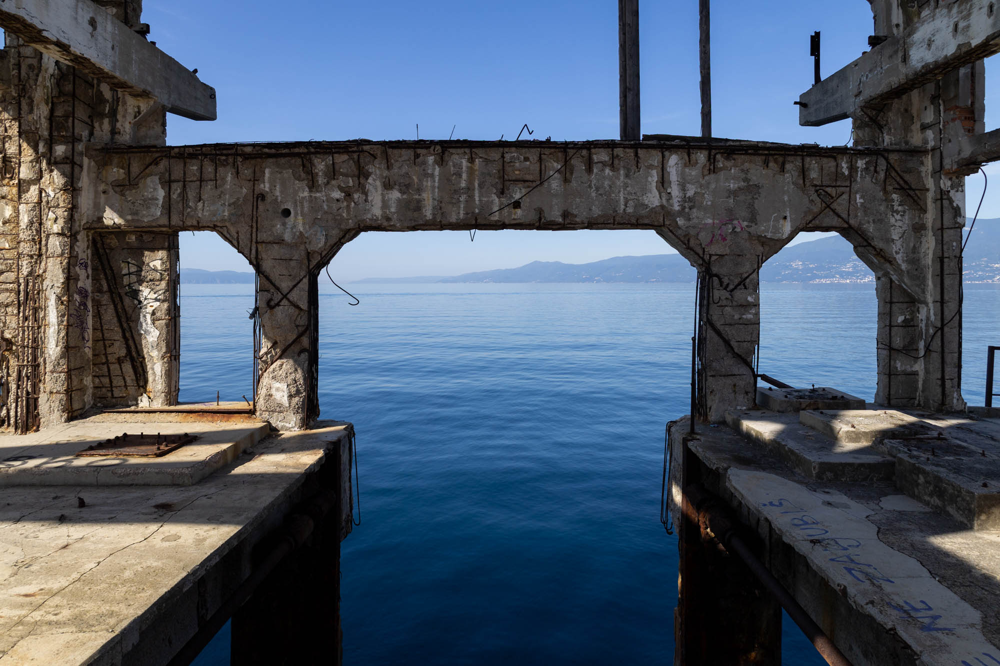
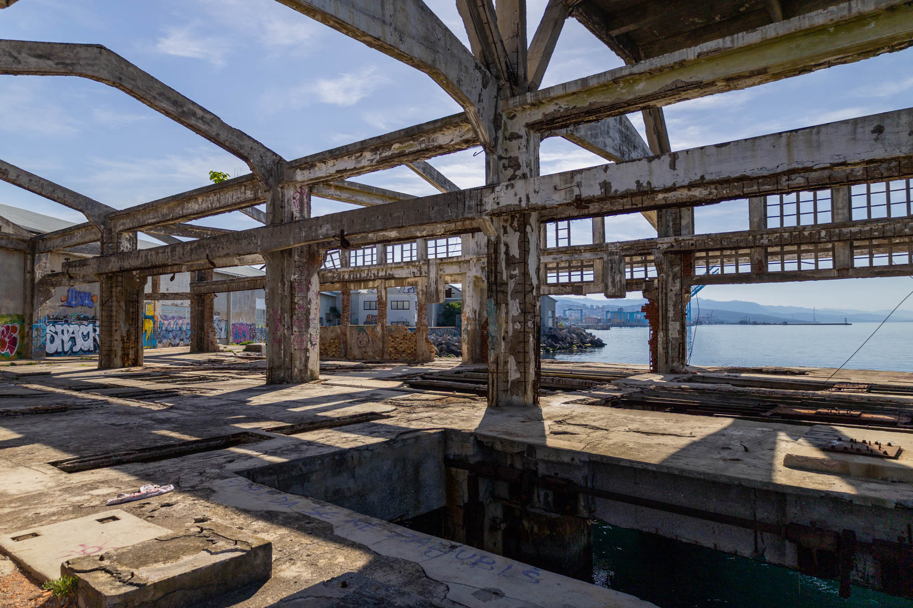

In a large bay on the Adriatic Sea, the world's first modern self-propelled torpedo was invented in the 1860s. This site, now fully abandoned, was the torpedo's first testing site and eventually the world's first torpedo factory.
The shell of the building pictured above dates back to the 1930s, and over time more than 30 different models of torpedo were produced here. Little of note remains today, but you can still see the narrow-gauge rail tracks once used to transport torpedoes from the factory to the testing launch site.
Building on civilian inventor Giovanni Luppis’ original prototypes, English engineer and entrepreneur Robert Whitehead refined the concept and completed the first practical torpedo design. It featured a hydrostatic plate connected to a depth rudder, allowing it to maintain a set depth beneath the surface. The first torpedo could travel at 7 knots and strike targets up to 700 yards away, all powered by compressed air.


The torpedo factory ultimately closed in 1966, and its shell has remained in a state of decay ever since. For the adventurous and lucky, it is still possible to slip through the port's courtyard and follow the seawall to visit this historic and picturesque site.